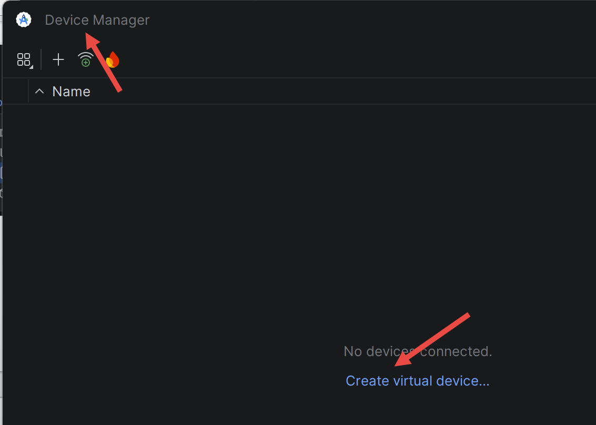

2. Einrichtung der Entwicklungsumgebung
2.1. Android Studio
[Android Studio] kann kostenlos heruntergeladen werden unter https://developer.android.com/studio. Beim ersten Start bietet der Assistent eine Standardinstallation an: Akzeptieren Sie sie, und er lädt das SDK [Android] (die Bibliotheken und Werkzeuge, die zum Kompilieren einer App nötig sind) und den Emulator herunter.

Der [SDK Manager] ([Tools / SDK Manager] oder [More Actions / SDK Manager] auf dem Startbildschirm) installiert und aktualisiert die Komponenten des SDK. Registerkarte [SDK Platforms]: eine aktuelle [Android]-Plattform (in diesem Kurs API 37, die Einstellung [compileSdk] der Projekte); Registerkarte [SDK Tools]: [Android SDK Build-Tools], [Android SDK Platform-Tools] (enthält [adb]) und [Android Emulator].

[Android Studio] installiert außerdem ein eigenes JDK, [JBR] ([JetBrains Runtime], in [C:\Program Files\Android\Android Studio\jbr]): Dieses führt [Gradle] aus. Um ein Projekt außerhalb von [Android Studio] über die Kommandozeile zu kompilieren, geben Sie einfach dieses JDK und das SDK an:
- [gradlew.bat] („Gradle Wrapper“): ein kleiner Starter, der jedem Projekt beiliegt und bei Bedarf die vom Projekt benötigte Version von [Gradle] herunterlädt (Datei [gradle/wrapper/gradle-wrapper.properties]);
- [installDebug]: kompiliert die Anwendung (Debug-Version) und installiert sie auf dem angeschlossenen Gerät. [assembleDebug] kompiliert sie nur, nach [app/build/outputs/apk/debug/app-debug.apk].
2.2. Einen Android-Emulator einrichten
Wenn Sie kein Smartphone haben, können Sie die App auf einem Emulator testen: einem virtuellen Smartphone, das in einem Fenster auf Ihrem Computer läuft. Voraussetzungen: Die Virtualisierung muss im BIOS aktiviert sein, und unter [Windows] muss das Feature [Windows Hypervisor Platform] aktiviert sein. Erstellen Sie das virtuelle Gerät im [Device Manager] ([Tools / Device Manager]): [Create Device], eine Vorlage (zum Beispiel [Pixel 8]), ein aktuelles Systemabbild für den Prozessor [x86_64] und [Finish].

Die Schaltfläche [Play] im [Device Manager] startet den Emulator. Anschließend prüfen wir, ob [adb] (das Werkzeug, das den Computer mit dem Gerät verbindet, in [%LOCALAPPDATA%\Android\Sdk\platform-tools]) ihn erkennt:
Wird das Gerät als [offline] aufgeführt, warten Sie, bis der Startvorgang abgeschlossen ist, oder starten Sie [adb] neu ([adb kill-server], gefolgt von [adb start-server]).
2.3. Das Android-Smartphone vorbereiten
Um die App auf einem echten Smartphone auszuführen, muss das Smartphone so eingestellt sein, dass es vom Computer aus gesteuert werden darf:
- Entwickleroptionen aktivieren: [Settings / About phone], siebenmal auf [Build number] tippen;
- [USB debugging] in den [Developer options] aktivieren;
- das Smartphone mit einem USB-Kabel anschließen, das Daten überträgt, und die Autorisierungsanfrage auf dem Smartphone akzeptieren;
- prüfen, ob [adb devices] das Smartphone anzeigt.
In [Android Studio] zeigt die Geräte-Dropdown-Liste neben der Schaltfläche [Run] dann den Emulator und das Smartphone an.
2.4. Ein Projekt erstellen
Ein Projekt namens [Compose] wird in [Android Studio] über [File / New / New Project] mit der Vorlage [Empty Activity] erstellt: ein Name ([Name]), eine Anwendungs-ID ([Package name], zum Beispiel [fr.stahe.examples], wie ein Domainname rückwärts geschrieben: Zwei auf demselben Smartphone installierte Anwendungen müssen unterschiedliche IDs haben) und die Konfigurationssprache [Kotlin DSL]. Der Assistent erzeugt eine vollständige, sofort lauffähige App. Das Beispielprojekt wurde auf diese Weise erstellt und anschließend von Hand ergänzt; seine Konfigurationsdateien werden in Beispiel 01 gezeigt.